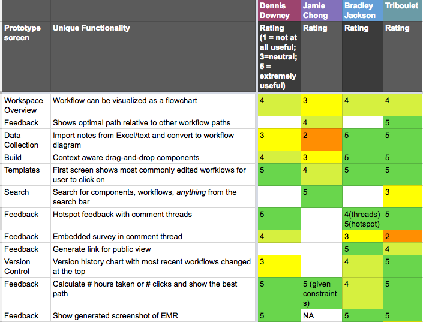
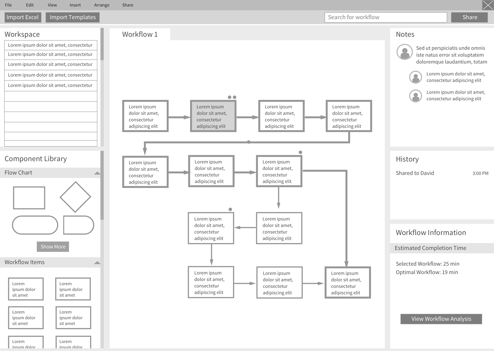
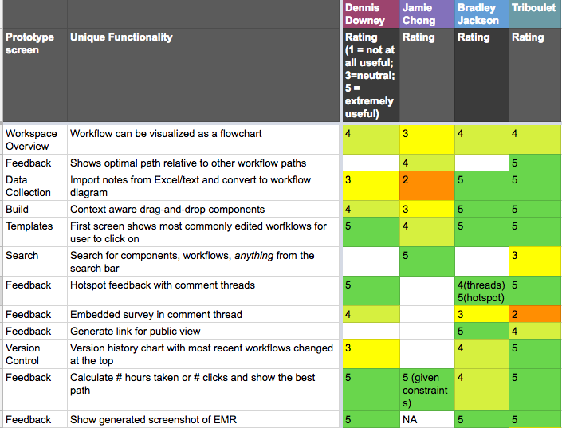
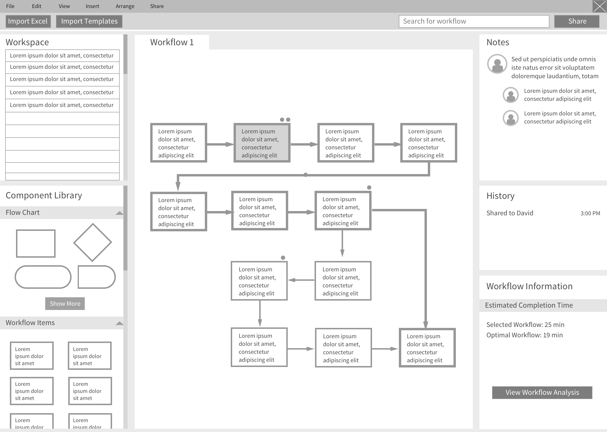

Reimagining workflow design.
January 2018 - Present
For our master's thesis project, we're serving as design consultants to Allscripts Healthcare Solutions, a company that implements electronic medical record (EMR) software for healthcare organizations. After months of user research and conceptual design, we identified the clinical workflow design process as an opportunity ripe for innovation. We're currently creating prototypes that facilitate workflow design for Allscripts consultants and motivate doctors, nurses, and assistants to provide more feedback.
We approached our research from the perspective of discovering opportunities for design in EMR training. However, we discovered that while providers disliked the short and digital nature of training, communication and design issues upstream cause many of the inefficiences that contribute to dissatisfaction. We decided to focus our efforts on designing to solve problems early in the implementation process, so that we may identify the root of the problem.

We've synthesized user interviews, ideated in parallel, and user tested rough concepts as of April.
Healthcare IT is a vast industry.
Our project charter was to improve EMR mastery and increase client satisfaction. In our first round of user research, we interviewed Allscripts consultants, healthcare IT experts, and competitors—we also traveled to HIMSS in Las Vegas to identify key needs in the industry. We measured the impact of regulatory pressure on the development of clinical software, and we identified data analysis and interoperability as key drivers of innovation in the EMR space.
We clustered shared sentiment from interviews and validated needs through storyboards.
We identified workflow design as an area where we could deliver the highest strategic value for Allscripts.
Design sprints and user testing
Starting in March, we started brainstorming solutions to help consultants manage the design of clinical workflows in EMR software. From motivating participation to creating workflow flowcharts, we attempted to create a sprint schedule that would facilitate the development of divergent design concepts.
We scoped our ideation sessions by naming the underlying question we were designing for. Examples were how might we make it easier for healthcare employees to give feedback on EMR workflows, or how might we make it easier for implementation consultants to communicate design decisions to client leadership?
Meticulously planned sprints can often be derailed by exciting ideas.
Measuring desirability and viability through user testing.
Through March and April, we worked with Allscripts to source consultants from within the company and physicians familiar with the software implementation process. We mapped our prototypes to user stories we synthesized from interviews, and measured the desirability of individual features.
 



We're currently user testing, synthesizing our findings, and iterating on our prototypes.
So where are we now?
It's almost May, and we're waist-deep in user testing. We're using this as an opportunity to figure out whether we're solving the right problem for our clients, and more importantly, EMR end users. We're working on finding better ways to share newly discovered findings with each other, organize vast amounts of documentation, and ask the right questions that surface true feelings during user tests.
As we continue to narrow down on ideas with high potential, we'll be increasing the fidelity of our prototypes and formalizing how our potential solution would change the existing Allscripts service model. Hope to report back soon!